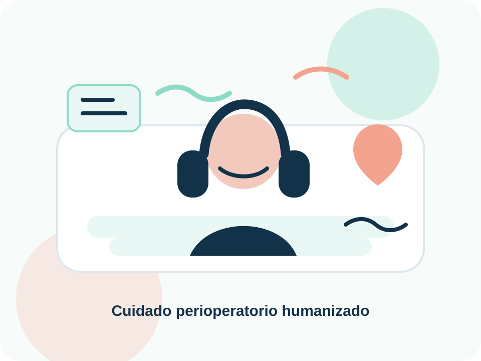
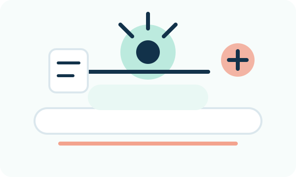

La música como apoyo terapéutico en el entorno perioperatorio
Recurso informativo–interactivo sobre el uso de la musicoterapia y de la escucha musical terapéutica como estrategias no farmacológicas de apoyo para pacientes adultos antes, durante y después de procedimientos quirúrgicos.
Este sitio tiene fines educativos. No sustituye valoración clínica, protocolos institucionales ni indicaciones del equipo de salud.

Fundamento conceptual
¿Qué es la musicoterapia perioperatoria?
La musicoterapia perioperatoria agrupa intervenciones musicales utilizadas alrededor del acto quirúrgico con objetivos de apoyo emocional, reducción de ansiedad, modulación del dolor y mejora del confort. En la literatura se distingue entre musicoterapia clínica, realizada por profesionales formados en musicoterapia, y music medicine o escucha musical terapéutica, basada en música grabada aplicada como recurso complementario dentro del cuidado perioperatorio.
Base académica sugerida: AMTA; Bradt et al., 2013; Ginsberg et al., 2022.
Musicoterapia clínica estructurada
Intervención planificada, individualizada y evaluada, con objetivos terapéuticos definidos. Puede incluir escucha guiada, relajación, respiración, selección musical significativa y acompañamiento por personal especializado.
Uso de música grabada mediante audífonos o dispositivos institucionales. Su aplicación debe considerar consentimiento, higiene, volumen seguro, preferencias culturales, comunicación clínica y condiciones del procedimiento.
Apoyo a la reducción de ansiedad anticipatoria, orientación emocional y preparación para el procedimiento.
02
Transoperatorio
Uso controlado cuando no interfiere con comunicación, monitoreo, seguridad quirúrgica o indicaciones anestésicas.
03
Postoperatorio
Complemento para confort, recuperación emocional y manejo multimodal del dolor bajo vigilancia del equipo de salud.
Impacto clínico potencial
Beneficios clínicos reportados
La evidencia sugiere que las intervenciones musicales pueden contribuir a disminuir ansiedad, dolor y algunos indicadores fisiológicos de estrés. Su uso debe entenderse como complemento del cuidado perioperatorio, no como reemplazo del tratamiento farmacológico o psicológico indicado.
Base académica sugerida: Kühlmann et al., 2018; Li et al., 2024; Lee et al., 2023.
🫀
Ansiedad preoperatoria
Puede reducir ansiedad antes del procedimiento, especialmente cuando la música se adapta a preferencias del paciente.
💊
Requerimiento farmacológico
Algunos metaanálisis reportan reducción de opioides y sedantes en contextos perioperatorios específicos.
🌿
Dolor postoperatorio
Puede apoyar el manejo multimodal del dolor mediante distracción, regulación emocional y relajación.
🤝
Confort emocional
Promueve una experiencia más humanizada, con mayor sensación de acompañamiento y control percibido.
🧘
Estrés fisiológico
Puede asociarse con menor activación autonómica, frecuencia cardiaca, presión arterial o cortisol en ciertos estudios.
Bases neurofisiológicas y psicosociales
Mecanismos de acción
Los efectos de la música en el entorno perioperatorio no dependen de un único mecanismo. Se explican mejor como una interacción entre regulación emocional, procesamiento auditivo, atención, respuesta autonómica y significado personal de la música.
Base académica sugerida: Schäfer et al., 2013; Fu et al., 2019; Ginsberg et al., 2022.
Sistema límbico, recompensa y emoción
La música puede activar redes asociadas con placer, memoria, seguridad y regulación afectiva.
Esta sección organiza artículos, revisiones sistemáticas, metaanálisis y ensayos clínicos sobre intervenciones musicales en cirugía. La evidencia es prometedora, aunque algunos trabajos reportan heterogeneidad metodológica y riesgo de sesgo.
Metaanálisis
Kühlmann et al. (2018)
Ensayos en pacientes adultos quirúrgicos; reportó disminución de ansiedad y dolor con intervenciones musicales.
La música ha sido utilizada históricamente como recurso de acompañamiento, regulación emocional y bienestar. En el entorno hospitalario actual, su uso requiere un enfoque interdisciplinario que involucre enfermería, anestesiología, cirugía, psicología, musicoterapia, personal técnico y otros integrantes del equipo de salud.
Paciente en periodo perioperatorio
La intervención debe preservar consentimiento, seguridad, privacidad y preferencias personales.

Entorno quirúrgico
La música no debe interferir con comunicación, monitoreo, alarmas ni procedimientos del equipo de salud.
Equipo de salud
La aplicación debe integrarse a protocolos institucionales y registrarse como intervención complementaria.
Selección musical
Tipos de música recomendados
No existe una única música “correcta”. La selección debe equilibrar preferencia del paciente, bajo nivel de estimulación, volumen seguro y compatibilidad con las condiciones clínicas.
Música clásica instrumental
Útil por su estructura armónica y baja carga verbal cuando el paciente la acepta.
Ambient / relajación
Genera un ambiente sonoro estable, continuo y de baja estimulación.
Sonidos de naturaleza
Puede asociarse con calma, respiración pausada y reducción de tensión ambiental.
Preferencia cultural
La música familiar puede fortalecer comodidad, adherencia y sentido de control.
Recomendaciones prácticas
Orientación para pacientes
Estas recomendaciones ayudan a usar la música de manera segura y coordinada con el equipo de salud.
Antes del procedimiento
Comentar con el personal sanitario si desea escuchar música.
Elegir música relajante, familiar y sin sonidos intensos.
Evitar volumen alto o audífonos que impidan escuchar indicaciones.
Durante la estancia hospitalaria
Usar equipo limpio y autorizado.
Retirar audífonos si el personal necesita comunicarse.
Informar incomodidad, mareo, irritación o aumento de ansiedad.
Después del procedimiento
Usar música como apoyo al confort y descanso.
No suspender medicamentos indicados por escuchar música.
Comunicar dolor, ansiedad persistente o malestar emocional.
Implementación clínica
Guía breve para personal de salud
La aplicación clínica requiere criterios mínimos de seguridad, registro y coordinación interdisciplinaria.
1
Valorar elegibilidad
Confirmar consentimiento, estado de conciencia, audición, idioma, preferencia musical y ausencia de contraindicaciones.
2
Definir momento
Priorizar preoperatorio; considerar transoperatorio o postoperatorio si el procedimiento y el protocolo lo permiten.
3
Controlar dosis sonora
Usar volumen moderado, duración sugerida de 15 a 30 minutos y equipo higienizado.
4
Registrar intervención
Documentar tipo de música, duración, tolerancia, respuesta percibida y cualquier evento adverso.
Precauciones: evitar uso si interfiere con comunicación clínica, monitoreo, alarmas, sedación, condiciones auditivas, rechazo del paciente o indicación del equipo tratante.
Medición de ansiedad
Instrumentos validados y evaluación educativa
Para investigación o práctica clínica formal se recomienda utilizar escalas validadas como APAIS o STAI bajo autorización, capacitación y protocolo institucional. La herramienta interactiva de esta página es únicamente orientativa y no debe interpretarse como diagnóstico.
Base académica sugerida: Moerman et al., 1996; Vergara-Romero et al., 2017; Ding et al., 2025.
APAIS
Amsterdam Preoperative Anxiety and Information Scale. Instrumento breve para ansiedad preoperatoria y necesidad de información.
Listado en formato APA 7 preliminar. Debe revisarse según lineamientos institucionales y disponibilidad de acceso a texto completo.
American Music Therapy Association. (s. f.). What is music therapy? AMTA. Ver fuente
Bradt, J., Dileo, C., & Shim, M. (2013). Music interventions for preoperative anxiety. Cochrane Database of Systematic Reviews. Ver fuente
Kühlmann, A. Y. R., de Rooij, A., Kroese, L. F., van Dijk, M., Hunink, M. G. M., & Jeekel, J. (2018). Meta-analysis evaluating music interventions for anxiety and pain in surgery. British Journal of Surgery, 105(7), 773–783. Ver fuente
Li, G., Yu, L., Yang, Y., Deng, J., Shao, L., & Zeng, C. (2024). Effects of perioperative music therapy on patients with postoperative pain and anxiety: A systematic review and meta-analysis. Journal of Integrative and Complementary Medicine, 30(1), 37–46. Ver PubMed
Lee, H. Y., Nam, E. S., Chai, G. J., & Kim, D. M. (2023). Benefits of music intervention on anxiety, pain, and physiologic response in adults undergoing surgery. Asian Nursing Research, 17(3), 138–149. Ver PubMed
Geensen, R., Dirven, T. L. A., Bax, F. H. E., Klimek, M., & Jeekel, J. (2025). Music interventions in patients undergoing surgery: A systematic review using strict inclusion criteria. Complementary Therapies in Medicine, 92, 103195. Ver PubMed
Ginsberg, J. P., Raghunathan, K., Bassi, G., & Ulloa, L. (2022). Review of perioperative music medicine: Mechanisms of pain and stress reduction around surgery. Frontiers in Medicine, 9, 821022. Ver fuente
Fu, V. X., Oomens, P., Sneiders, D., van den Berg, S. A. A., Feelders, R. A., Wijnhoven, B. P. L., & Jeekel, J. (2019). The effect of perioperative music on the stress response to surgery: A meta-analysis. Journal of Surgical Research, 244, 444–455. Ver PubMed
Fu, V. X., Oomens, P., Klimek, M., Verhofstad, M. H. J., & Jeekel, J. (2020). The effect of perioperative music on medication requirement and hospital length of stay: A meta-analysis. Annals of Surgery, 272(6), 961–972. Ver fuente
Schäfer, T., Sedlmeier, P., Städtler, C., & Huron, D. (2013). The psychological functions of music listening. Frontiers in Psychology, 4, 511. Ver fuente
Moerman, N., van Dam, F. S. A. M., Muller, M. J., & Oosting, H. (1996). The Amsterdam Preoperative Anxiety and Information Scale (APAIS). Anesthesia & Analgesia, 82(3), 445–451.
Vergara-Romero, M., Morales-Asencio, J. M., Morales-Fernández, A., Canca-Sánchez, J. C., Rivas-Ruiz, F., & Reinaldo-Lapuerta, J. A. (2017). Validation of the Spanish version of the Amsterdam Preoperative Anxiety and Information Scale (APAIS). Health and Quality of Life Outcomes, 15, 120. Ver fuente
Comunicación
Contacto
Espacio para solicitar información, compartir comentarios o establecer comunicación con el equipo responsable de la plataforma.
Sustituir el correo de ejemplo por el correo institucional del proyecto.